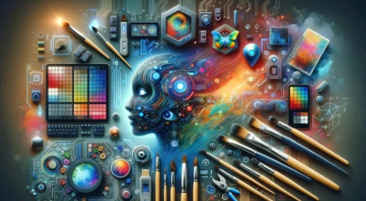
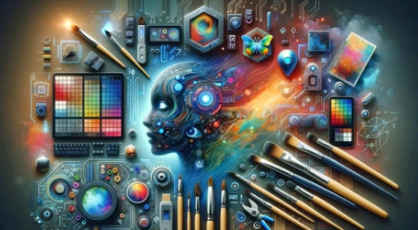

علم الحاسوب
علم الحاسوب من اهم العلوم في عصرنا الحالي حيث يهتم بالحاسب الالي من جميع الزوايا والنواحي
فؤائد علم الحاسوب
تتعدد فؤائد الحاسوب في جميع مجالات الحياه ففي الوقت الحالي لايمكن الاستغناء عن الحاسوب في ايا من هذه المجالات
التعليم
توفير برامج تكفي الطالب صعوبات التخيل في بعض المجالات العلميه مثل الرياضيات مما يجعل المفاهيم الرياضيه اكثر واقعيه واسهل للفهم
الطب
يستخدم الحاسوب في الطب في تصوير المرضى لتشخيص اسباب مرضهم كالتصوير المقطعي المحوسب والتصوير بالرنين المغناطيسيواختبارات الدم
الزراعه
استبدال الجهد البشري والايدي العامله علي الالات الزراعيه التقليديهومعدات الزراعه بالالات التكنولوجيا الحديثه المربوطه مع اجهزه الكمبيوتر المبرمجه لتعمل وفق نظام معين
الصناعه
التحكم بالربوتات المستخدمه في عمليات التصنيع التي تؤدي وظائف ميكانيكيه معقده فهذه الربوتات عباره عن الات متصله باجهزه كمبيوتر مبرمجه لاداء عده مهام
ما هو علم الحاسوب؟
هو احد العلوم التي تهتم بالحاسب الالي من جميع الزوايا والنواحي فهو يبدابما يسمي بالعلوم النظريه مثل نظريه المعلومات ويدخل في بناء امظمه التشغيل مرورا بالتطبيقات مثل تطبيقات سطح المكتب
ويتم تعريف علم الحاسوب بشكل دقيق علي انه علم يختص بالقدره علي تطبيق المعرفه الناتجه من الحاسوب والرياضيات علي جميع فروع المعرفه والقدره علي تحليل اي مشكله وتحديد المتطلبات لها باستخدام الحاسوب لوضع الحل المناسب والقدره علي تصميم وتنفيذ وتقييم النظام القائم علي الحاسوب لوضع الحل المناسب والقدره علي تصميم وتنفيذ وتقييم النظام القائم علي الحاسوب والعميات والبرامج لتلبيه الاحتياجات المطلوبه ويسهل القدره علي العمل بفعاليه في فرق ومجموعات لتحقيق هدف مشترك
علم دراسه الحاسب الالي وانظمه الحوسبه

مجالات علم الحاسوب
البرمجه
البرمجه من اهم المهارات التي يجب علي الافراد اكتسابها فالبرمجه هي لغه التكنولوجيا والابتكار وهي المسؤوله عن انشاء كل شئ من التطبيقات والالعاب الي الموقع الالكترونيه والربوتات
الذكاء الاصطناعي
هو فرع من فروع علم الحاسوب يشير الي العديد من التقنيات التي تتيح الفرصه للالات ان تتعلم وتتعامل مثل البشر ومحاوله جعلها تحاكي الذكاء البشري
تحليل البيانات
يعرف بانه عمليه تنظيف وتحويل ونمذجه البيانات لاكتشاف معلومات مفيده لاتحاذ قرارات العمل
صور لبعض مجالات علم الحاسوب

 
